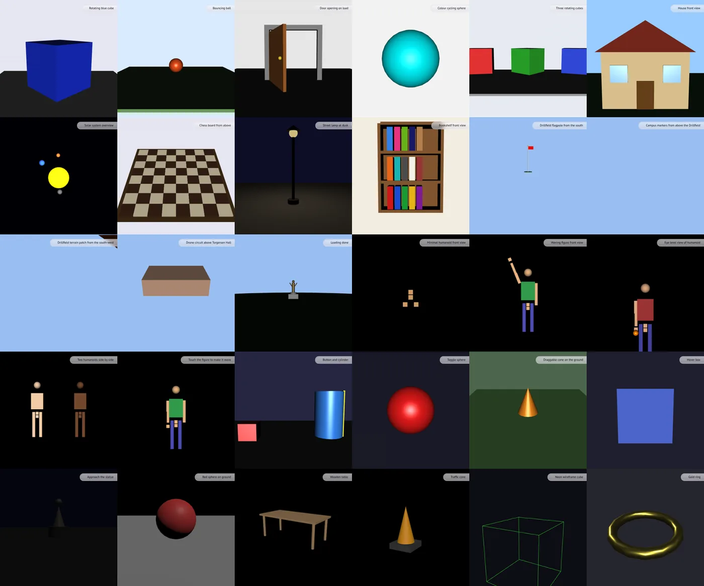
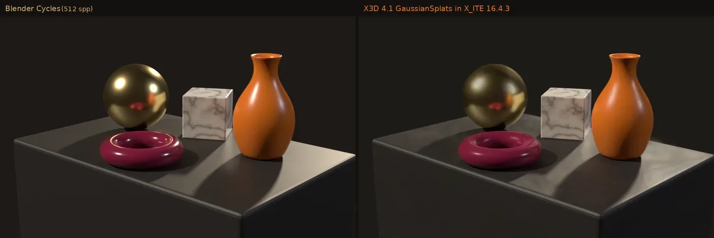
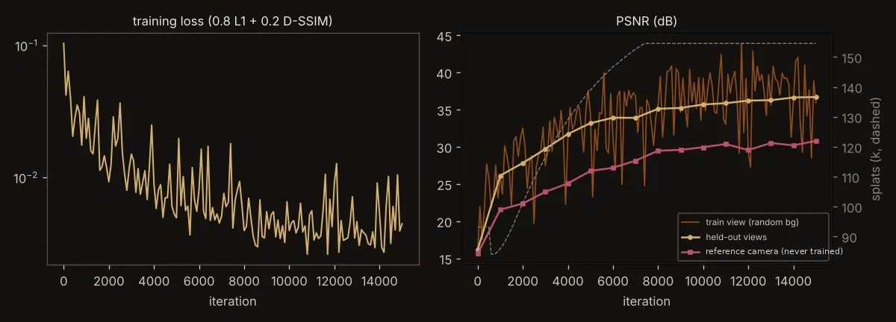
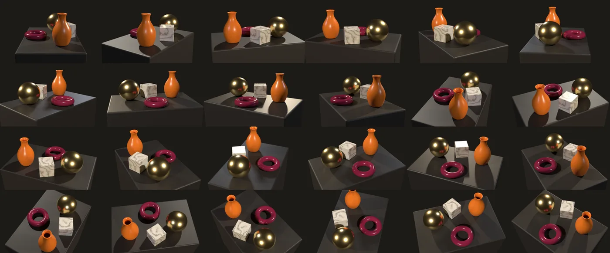
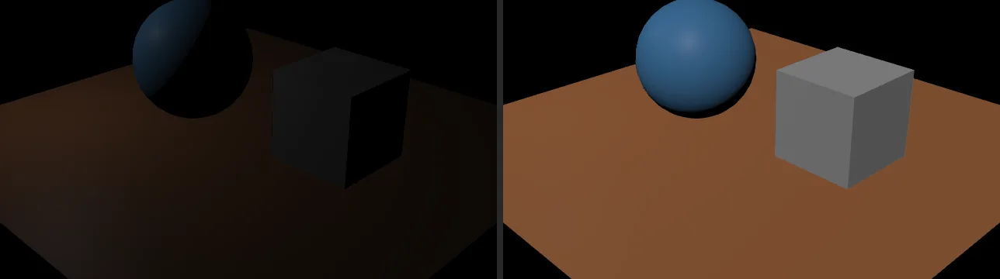
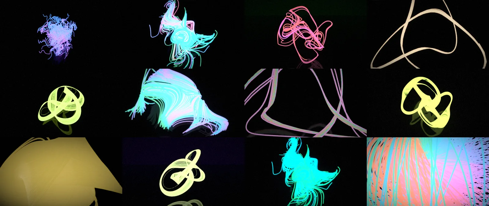

Language models got good at code because code can be checked: the compiler says no, the model reads the error, it tries again. 3D never had that loop. X3D can have it: an ISO standard with a schema, profiles, and a machine-readable model of every node. This page shows what we built on that idea, what it measured, and what it found, with the 3D running live in your browser.
Synthetic still life → 132,923 Gaussian splats → X3D 4.1X_ITE
What it has measured
Eight numbers, each naming the tool that measured it
Nothing here is a benchmark result in the published sense: these are small, reproducible runs with their method stated. The source line under each number says which validator, renderer or model produced it.
X3D-Bench slice · 30 prompts, 6 kinds
30 / 30
scenes valid after one repair round
first try24
after repair30
looks right28
Validator fork (XSD + semantic + profile) · X_ITE 16.4.3 headless · Claude writer, 8 Oct 2026
Validator fork · 324 tests
5 of 6
real defects that only the profile check caught; schema and browser both missed them
schema1
profile5
browser0
Same 30 scenes · fork vs the official-style 4.1-only XSD check · X_ITE loaded all 30
Live cloud loop · one sentence
27.9 s
from a sentence to a checked, rendered picture
rejected11.5 s
valid6.2 s
render10.3 s
Gemini 3 Flash writer · 4.0 XSD judge · X_ITE 16.4.3 on Cloud Run. Try 1 used a 4.1-only attribute; the judge caught it.
Scoreboard · 12 models
263
scored runs, one-shot versus with the judge in the loop
Claude 1-shot80%
Claude + loop100%
BigQuery table · 11 Gemini variants + Claude · same validator fork
Gaussian splats · X3D 4.1 draft
970,654
splats of the Great Pyramid as one standard X3D node, live in a browser; plus a 500,000-splat Pantheon
X_ITE 16.4.3 · GaussianSplats node · parse 12.1 to 15.8 s on a laptop GPU
One scene, every scale
1017.7×
a single X3D file from 1 m on a campus lawn to the 978 stars within 50 light-years
Every scene on this page went through the same five stations. The two feedback arrows are the point: a schema error goes back to the writer with the fix spelled out, and a scene that is valid but looks wrong goes back too.
01 · MAKE
Anyone writes 3D
A language model from a sentence, an artist in Blender, or a capture of a real place.
LLM
Blender
splat capture
02 · DECLARE
X3D says what it needs
Version, profile and components in the header: a licence the browser can read before it plays the file.
4.0 ISO
4.1 draft
03 · JUDGE
A strict validator
Schema chosen by declared version, wiring, and a profile check read from the Consortium's own object model (X3DUOM).
XSD
semantic
profile
repair
04 · RENDER
A headless browser
X_ITE draws every scene to a picture that a person or a vision model can judge.
X_ITE 16.4.3
Chromium
05 · SHIP
Out to everywhere
The open web with no plugin, back into Blender, a public scoreboard, a cloud loop.
WebXR
Blender
BigQuery
judge → error with the fix spelled out → writer repairs → re-checkrender looks wrong → vision critic → regenerate
Layer
Question it answers
Example failure
Who checks it
1 · Well-formed
Is it parseable XML?
Unclosed tag
Any XML parser
2 · Schema
Are these real nodes and fields, in legal places?
<Sphere colour="red"/>
Validator, now per declared version
3 · Profile
Has the file declared the capabilities it uses?
PhysicalMaterial under Immersive without Shape level 2
Only the fork
4 · Wiring
Do DEF/USE and ROUTEs connect real fields of matching types?
ROUTE to a field that does not exist
Validator, made ROUTE-aware
5 · Meaning
Is it the scene that was asked for?
A “red chair” that is a blue cube
Render + a human or model judge
Live demos
The scenes themselves, running in your browser
Each demo starts as a still taken by the same headless renderer. Press Load live 3D to fetch X_ITE 16.4.3 and the real X3D file; drag to orbit, scroll to zoom. Under every scene is the verdict of the validator fork on that exact file.
Findings
What the work found
The landscape research, the validator work and the experiments boil down to these. Each card names where the evidence lives.
The thesis
X3D's edge is verifiability, not fluency
On small scenes, a model wrote X3D and three.js correctly at about the same rate. The difference is the error class: X3D's failures were version drift and profile drift, which a machine can name and fix; three.js failures are runtime or silent visual errors that nothing checks.
X_ITE loaded all 30 bench scenes, including the five profile violations and one schema-invalid GeoLOD scene, and drew them. “It rendered” proves nothing about conformance, and conformance is what lets a file outlive the browser it was made for.
Two geospatial scenes passed every check and rendered only sky. A render check (pixels that change when shapes are removed) plus a vision judge catches what a schema cannot: a camera pointed at nothing, a light that lights nothing.
Bench run 1: 28 of 30 visually right · render check + vision judge
The asset
X3DUOM is the Consortium's secret weapon
The profile check, the version hints and the repair tool read node sets, components and levels from the unified object model that already generates the Python and Java bindings. No hand-kept tables, nothing to drift as the standard moves.
hagopjay/x3d_mcp · src/validation/profile.py
The loop
Error text is part of the loop's quality
A GeoLOD scene needed three repair rounds because lxml truncates its expected-element list and omits the one element that mattered. A validator that quotes the content model closes the loop in one round; a repair tool applies the mechanical fixes so the model only sees errors that need judgment.
validator fork · repair_x3d · 13 tests
The noise
In an agent loop, a false warning is a defect
The upstream check flagged every DEF used only by a ROUTE as unused (six warnings on a six-ROUTE animation) and every reused Shape as empty (62 on one chess board). A model acts on noise; “fixing” a correct scene makes it worse.
validator fork · ROUTE-aware DEF analysis · Shape USE completeness
The landscape
Splats became a standard in 2026, everywhere at once
glTF ratified KHR_gaussian_splatting, OpenUSD 26.03 has a splat schema, 3D Tiles 2.0 names them in scope, and the X3D 4.1 draft carries a GaussianSplats node. Generated objects ship as GLB; no generator vendor mentions X3D.
AI-native 3D landscape review, 8 Oct 2026 · primary sources linked in the source document
The standard
Rigorous, durable, thinly staffed
X3D 4.0 has been ISO/IEC 19775-1:2023 since December 2023; its SAI companion passed its final ballot on 17 Sep 2026; a public 4.1 draft adds splats, environment lights and more. X_ITE implements about 95% of the node set. The ecosystem runs on roughly six maintainers.
State of play review, 8 Oct 2026 · ISO and web3d.org primary sources

30 scenes, written cold, one try each. Objects, assemblies, animation, interaction, HAnim and geospatial, rendered from each scene's own viewpoint before any repair. X_ITE 16.4.3 headless, 512×512
The browser
X_ITE, field-tested on 16.4.3 and 16.5.0
All 259 X3D 4.0 node names exist; 13 are silent stubs.
A version-4.0 file is refused GaussianSplats, FontLibrary and other 4.1 nodes: versions are enforced.
It ships an unregistered Annotation component from the v4 working drafts.
Formats are sniffed by content (11 parsers); KTX2 is the one suffix-bound format.
Script nodes run in the page's realm: schema-valid is not safe.
X_ITE field guide · every finding re-run on 16.5.0, none changed
Synthetic data to splats
No camera, no photos: a Blender scene becomes trained Gaussian splats
A still life built in Blender was rendered by Cycles from known camera poses, a Gaussian splat model was trained on those renders on one cloud GPU, and the add-on wrote it out as the X3D 4.1 GaussianSplats node. Against the Cycles reference, the splats score higher than the mesh export.

Cycles reference vs X3D in X_ITE, same camera. Splats SSIM 0.977; mesh export SSIM 0.905. SSIM whole frame, 960×600, X_ITE tone mapping off

15,000 gsplat steps in 247 s on one NVIDIA L4; Cycles rendered 181 frames in 107 s; 132,923 splats out. training log and receipt

The training set: synthetic views from known poses. Every pixel is labelled data, so no photo is needed and no pose is estimated.
The Blender bridge and its ecosystem
Blender 5.3 imports splats and exports none. The add-on exports them.
Blender 5.3 (branch cut 9 Oct 2026, release 10 Nov) adds native Gaussian splats as a PointCloud type, with PLY, SPZ, glTF and USD import but no export. X3D Blender I/O 2.6.0 reads that native layout and writes X3D 4.1, which makes it, today, the only way to get splats back out of Blender. A daily watch tracks the upstream projects that matter; the top of its ranked map:

Found by the evolver, fixed in the add-on. The exporter wrapped each light in a Transform, so a DirectionalLight with the default global="false" lit nothing outside it. Exporting global="true" fixes it. X_ITE 16.4.3 · live in the demos

Evolved light. The 12 best of 42 elites from a MAP-Elites run in which Gemini directs the mutations; rendered by Blender Cycles, scored by an image critic, and exported to X3D 4.0 (16 elites validate and load in X_ITE; the glow is lost, since X3D 4.0 has no emissive strength).
Questions for the standard
Nine places where the spec, the schema and the browser disagree
Each was reproduced with a minimal scene; the ones with a ▶ link are live in the demo theatre above. They are questions, not bug reports: the point is that a checkable standard makes them findable.
Which order are GaussianSplats orientations written in?The 4.1 draft does not say. X_ITE reads x y z w (the glTF order); 3DGS PLY files store w x y z. Same 197 splats, only the order differs, very different picture.▶ demo
Are NurbsCurve control points already weight-multiplied?X_ITE computes Σ N P / Σ N w, so the curve passes (0.60, −0.20); Piegl–Tiller tools give (1.50, −0.80). Clause 27 names no convention.▶ demo
Does Immersive cover PhysicalMaterial?Annex E Table E.2 and Table 12.4 say yes; Table E.3 and the X3DUOM Immersive node list say no. One component line settles it in practice.▶ demo
Should the XSD require a GeoOrigin inside GeoLOD?The 4.0 schema's content model demands one between inline children; the spec text makes geoOrigin optional and discourages GeoOrigin.▶ demo
What is the status of the Annotation component?Clause 43 of the v4 working drafts; X_ITE ships it unregistered; it is in neither 4.0 nor the 4.1 object model, so the schema rejects it.▶ demo
Can geospatial X3D leave Earth?The spec's ellipsoids are all Earth's. X_ITE already accepts the Moon through Pluto (its Uranus is ten times too thin). “The browser has already been to the Moon. The standard hasn't.”▶ demo
Is LOD range measured before or after a Transform scale?The same LOD, scaled by 0.001 with its range scaled to match, switches to a different level in X_ITE.▶ demo
Should splats be loadable by URL?The 4.1 node holds all data inline (a 500,000-splat file runs to tens of megabytes of XML). X_ITE already loads a 3DGS PLY through Inline.
Is 1 m geospatial placement possible in single precision?A 1 m survey grid placed by geographic coordinates lands with 0.16 m RMS error (0.28 m max): float32 spacing at that point on Earth is 0.06 to 0.5 m.
Context
Timeline
X3D 4.0 published as ISO/IEC 19775-1:2023 (PBR aligned with glTF, Web Audio, HAnim 2)
X3D Scene Access Interface (19775-2) passes its final ballot
X3D 4.1 draft documents a GaussianSplats node
Bench slice: 30 cold-written scenes, 30/30 valid after repair; validator fork at 324 tests
Blender 5.3 branch cut: native splats, import only
X_ITE 16.5.0 released; X3D Blender I/O 2.6.0 exports Blender's native splats to X3D 4.1; this page
Web3D 2026 conference opens (13 to 15 Oct)
Blender 5.3 release (planned); the add-on's CI adds 5.3
Version-controlled
Changelog
This page is a static folder in hagopjay/x3d-blender-io/docs/showcase: plain HTML, the X3D scenes, and a verdicts.json written by the validator. Every change is a commit; the scene list and its verdicts are rebuilt by tools/showcase_verdicts.py.
2026-10-11 · First version: eight sourced numbers, the five-station loop, 12 live demos (24 X3D files, every one checked by the validator fork), findings, splats, Blender ecosystem ranking, nine spec questions.